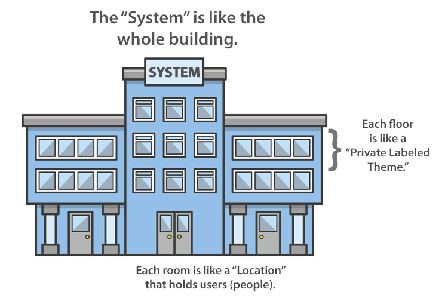

Welcome to LightSpeed VT's Help Docs
These Help Docs are intended to help you and your team to use as a resource to help configure, administer and leverage the full VT System to be successful.
Once your Account and initial VT System are set up, most of the “Standard” areas can all be updated and administered by you and your team. Additionall, if there are any areas of the system that need “advanced” settings changed that do not have Admin controls yet, we will note it in these Help Docs, and our Client Care team will be available to assist you.
Note
Anytime you see this icon in the system, it will lead to these Help Docs:

Contact Us
Contact our Client Care team from 5am PDT to 5pm PDT Monday - Friday at: 1-800-491-4372
Or email us at: support@lightspeedvt.com
Or attach a message around the neck of carrier pigeon and direct them to 11411 Southern Highlands Parkway, 2nd Floor, Las Vegas, NV, 89141.
Note
If you call or contact us anytime after our scheduled open hours, we will respond to you by the next business day. We are closed on the nationally observed federal holidays.
The LSVT Hierarchy
This introduction explains how the LSVT hierarchy works within the Application, and uses the analogy of a building to help explain how it all fits together.

A “building” is like a “System.”
A “floor” is like a “Private Labeled Theme.”
A “room” is like a “Location.”
A “person” in a room, is like a “User.”
You, as a VT Customer, have an account with LightSpeed VT, which is represented by a “System”. Think of a System like having a large office building built for you. The building has obvious attributes about it, like the name of the building, the general design, the paint job, etc.
Within the building, each floor may have some attributes that can be slightly different than the building. Things like; the interior design, the color of the carpet, the layout of the floor - just like a regular office building.
On each floor there are rooms, and ultimately that is where the people (users) are... they are in the rooms. Each room may also have some unique things about it that may be slightly different than the floor it is on. Things like; the channels that are subscribed to on the TV network, the size of the room, the logo on the door of the room, etc.
Each person in the room will also be slightly different too. They may have different color shirts on and may have different preferences or jobs of what they do within the room, but they are only inside one room at a time.
All of that being said, there are some attributes that are part of the building, that are the same on every floor, such as; the elevator and the roof. Then there are things on each floor that won’t change per room, such as the carpet in the halls.
As you go through these Help Docs, you will see notes about certain things that are “System” specific, some that are “Theme” specific, some that are “Location” specific and some that are “User” specific. In some instances there are settings at one level that may override the level above it, so it is helpful to understand this hierarchy of how these settings work to really leverage the flexibility of what you can accomplish with the LSVT platform.
Let's get started. Please note: Whenever you see this icon: it means it's time to try it yourself!